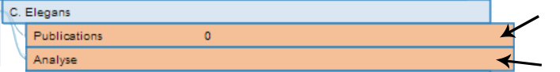

Press the search button. >> Click on your compound of intrest. After you pressed it, you may close the window.
Press on the visual button (if you are already on the visual page: refresh page or click the button again).
>>
Click on the publications tab of the graph to get the publications or analyse to get your data analysed. >> 